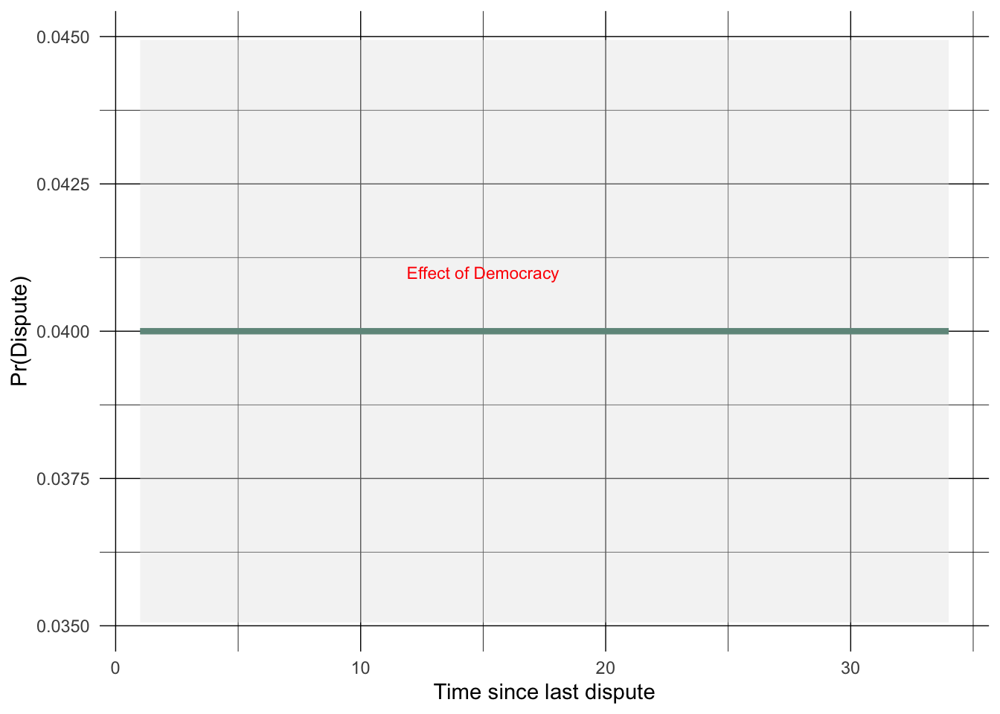
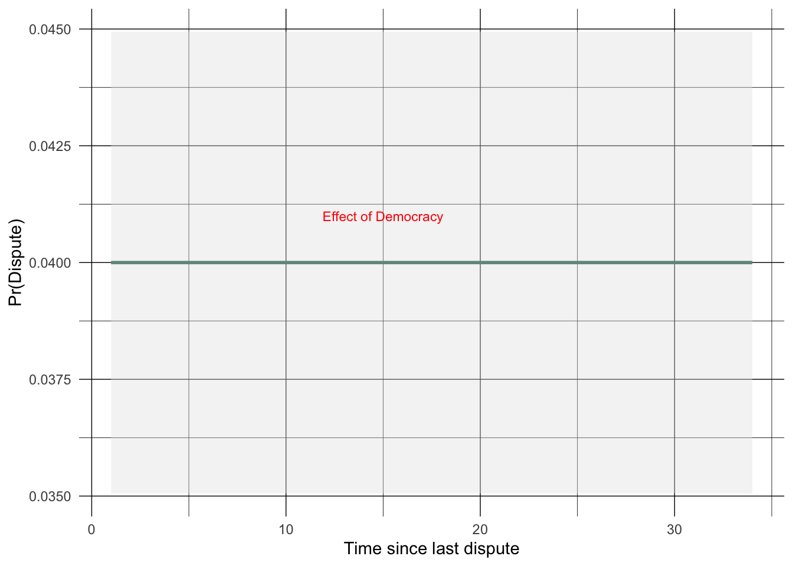

consider what “memory” might look like in a binary time series setting.
introduce concepts underlying hazard models.
understand the discrete time hazard model.
Temporal Dependence
So far, we have explored binary response models in terms of the structure of the LLF, estimation, and interpretation. Today, we’ll focus on the assumption the errors are independent over time - what we’ll call temporal independence.
Temporal independence requires that \(cov(\varepsilon_t, \varepsilon_t-k)=0\) - that the errors are not correlated across time. It implies that observations on \(y\) are independent of one another.
Put differently, the process that generates \(y\) is memory-less.
Memory in models
In the linear model, we considered several ways present-day values of \(y\) might arise as a function of things that happened in the past (either at lagged values of \(y\), or past values of \(x\) variables).
In the binary model, we need to consider the same sort of dynamics, but lagging the \(y\) variable does not exactly measure persistence - it would only measure whether the presence/absence of \(y\) in the last period affects present day values of \(y\). What we’d really like to measure is how the latent probability \(y=1\) in the past affects the probability \(y=1\) today.
Binary models so far …
The binary models we’ve examined so far have not accounted for the past. Consider the Oneal and Russett (1997) democratic peace data, and a model like this ::
What is the effect of democracy if the dyad has been at peace for 2 years?
code
# at mean data over 30 observationsatmean <-data.frame(stime=seq(1,34,1), deml=median(dp$deml), border=0, caprat=median(dp$caprat), ally=0)predictions <-data.frame(atmean, predict(dpm1, newdata=atmean, type="response", se=TRUE)) %>%mutate(fit=round(fit, 2) )ggplot(predictions, aes(x=stime, y=fit)) +geom_line(color="#005A43", size=1.5) +labs(x="Time since last dispute", y="Pr(Dispute)") +geom_ribbon(aes(ymin=fit-1.96*se.fit, ymax=fit+1.96*se.fit), fill="grey90", alpha=0.4) +theme_minimal() +annotate("text", x =15, y =0.041, label ="Effect of Democracy", color ="red", size =3) +theme(panel.grid.major =element_line(color ="black",size =0.25,linetype =1)) +theme(panel.grid.minor =element_line(color ="black",size =0.15,linetype =1))

What is the effect of democracy if the dyad has been at peace for 22 years? Obviously, there is no difference in this model because we didn’t account for time. In effect, we assumed each period is independent of any other, so there is no memory across observations. The effects of the \(x\) variables like democracy are assumed constant over time.
Memoryless
By construction, this model lacks any memory. \(Pr(Y_{i,t}=1)\) is a function of \(X_{i,t}\), but is independent of anything that happened prior to \(t\).
This means dyads that have been at peace for 2 years and for 22 years are treated as the same, varying only on the \(X\) variables.
Note this is by choice - we’re assuming \(y_t\) has no bearing on \(y_{t+1}\), so there is no persistence or memory from period to period. We’ll encounter a range of models that are explicitly aimed at understanding this question: How does having survived up until now affect the chances of failing now?
Data
The democratic peace data is panel data - composed of cross sections observed over time. The \(y\) variable is binary, and measures a rare event - conflict. So the \(y\) variable for any particular panel is usually a string of zeros, occasionally punctuated by a one.
What we’d really like to know is if/how strings of zeros affect the chances of a one at any given point in time. This is a question of hazards.
Hazards
The hazard is the probability of failure at a particular point in time, conditional on having survived up until that point. Asking about the chances something comes to an end without also asking how long it’s lasted so far often doesn’t make much sense.
Consider human mortality as an example:
What is the probability of death for a 2 year old white male in the US, all else equal?
What is the probability of death for a 22 year old white male in the US, all else equal?
What is the probability of death for a 92 year old white male in the US, all else equal?
It’s possible (likely?) these probabilities are all similar if not the same because we’re asking the wrong question. We’re considering all these probabilities unconditionally though a potentially important condition is that
The 2 year old has survived up until 2.
The 22 year old has survived up until 22.
The 92 year old has survived up until 92.
When we think about whether a unit fails at a particular point in time, it’s essential to consider how long they’ve survived up to that point. This quantity,
\[Pr(Fail_t | Survival_{t-1}) \]
is a conditional probability called the hazard rate. This is a really interesting quantity.
Time
What would data for mortality (or any sort of spells) look like? There are two basic types:
Survival:
\[Age = 1, 2, 3, 4, 5, \ldots 87, 88, 89\]
or
Failure:
\[Death = 0, 0, 0, 0, 0, \ldots 0, 0, 1\]
Note that these convey the two parts of the hazard - how many periods the individual survives, and at what period the individual fails.
These also represent two ways to think about time: continuously:
\[Age = 1, 2, 3, 4, 5, \ldots 87, 88, 89\]
or discretely:
\[Death = 0, 0, 0, 0, 0, \ldots 0, 0, 1\]
In truth, we almost always measure time discretely in the sense that failure can only happen in certain intervals (days, weeks, years, etc.), even though time is continuous and failure can happen in much smaller increments than these (e.g. minutes, seconds). Still, most treatments consider two types of hazard models:
Continuous time models using data like \(Age = 1, 2, 3, 4, 5, \ldots 87, 88, 89\) as the \(y\) variable.
Discrete time models using data like \(Death = 0, 0, 0, 0, 0, \ldots 0, 0, 1\) as the \(y\) variable. These are usually estimated using a binomial LLF (e.g. the logit model).
Hazard models
A key feature of any hazard model is that the model accounts for both time until failure, and the realization of failure. In continuous or discrete time models, both of these are part of the estimation.
Note
An aside on naming - models like these are interchangeably called “hazard models,” “survival models,” “duration models,” or “event history models.” They all refer to the same basic idea - modeling the time until an event occurs. They can sometimes indicate whether the quantity of interest is the hazard or survival - note that these are opposites in the sense that the hazard is the probability of failure at a particular point in time, while survival is the probability of surviving up to that point in time. “Event history” often refers to discrete time models.
Discrete Time - Binary Time Series Cross Section data
Time is continuous insofar as time units are infinitely divisible, but in practice, we measure time in discrete units like days, months, years, etc. In the democratic peace data above, we will have two dyads “fail” (have disputes) at year 3; but it’s nearly certain one of those dyads started its dispute before the other one. We group the data by these time intervals (years, in this case). So we are measuring time discretely (i.e, in years), but the underlying process is continuous. Moreover, the fact these can be grouped by failure time makes them grouped duration data.
It’s common to have binary \(y\) variables observed for cross sections over time - these are Binary Time Series Cross Section (BTSCS) data. This is the form the democratic peace data takes, and is a common form of data in the social sciences. BTSCS data are grouped duration data, and failure is measured in discrete time.
Here’s an example of BTSCS data thinking of disputes in dyads over time.
BTSCS data
State
Year
Dispute
Censored
US-Cuba
1960
0
0
US-Cuba
1961
1
0
US-Cuba
1962
0
0
US-Cuba
1963
0
0
US-Cuba
1964
0
0
US-Cuba
1965
0
0
US-Cuba
1966
0
0
US-Cuba
1967
1
0
US-Cuba
1968
0
0
US-Cuba
1969
0
0
US-Cuba
1970
0
1
US-UK
1960
0
0
US-UK
1961
0
0
US-UK
1962
0
0
US-UK
1963
0
0
US-UK
1964
0
0
US-UK
1965
0
0
US-UK
1966
0
0
US-UK
1967
0
0
Terminology
Let’s begin thinking about terminology:
we observe at each point \(t\) whether a unit fails or not. Failure means experiencing the event of interest. In mortality studies, this is is death; in the democratic peace data, the event is a militarized dispute.
each unit is at risk until it exits the data either because the period of observation ends, or because it fails and can only fail once. In mortality studies, an individual can only fail once; in the democratic peace data, a dyad can fail multiple times.
a unit survives some spell up to the point at which it fails. We can count these time periods to measure survival time.
the period a unit survives is called a spell; spells end at failure.
we have no idea what happened to these units prior to 1960; the units are left-censored.
we have no idea what happens to these units after 1970; the units are right censored. Any unit that does not experience the failure event during the period of study is right-censored.
Illustration
Here are different spells:
code
library(tidyverse)library(highcharter)# Binghamton University colorsbinghamton_colors <-c("#005A43", "#8C2132", "#FFD100", "#000000", "#636466")# Create dataframes for each case with updated labelscases <-list(list(x =c(3, 6), y =c(1, 1), name ="uncensored"),list(x =c(-0.5, 2.5), y =c(2, 2), name ="left censored"),list(x =c(2.8, 8), y =c(3, 3), name ="fails at last period"),list(x =c(3.5, 10), y =c(4, 4), name ="right censored"),list(x =c(5.5, 7), y =c(5, 5), name ="uncensored"))# Create the plothc <-highchart() %>%hc_chart(type ="line") %>%hc_xAxis(title =list(text ="time"),plotLines =list(list(value =2, width =2, color ="black"),list(value =8, width =2, color ="black") ),min =0,max =10 ) %>%hc_yAxis(title =list(text ="case"),min =0,max =5,tickInterval =1 ) %>%hc_plotOptions(series =list(lineWidth =3,marker =list(enabled =FALSE) ) ) %>%hc_legend(enabled =FALSE)# Add each case as a separate series with Binghamton colorsfor (i inseq_along(cases)) { hc <- hc %>%hc_add_series(data =list_parse2(data.frame(x = cases[[i]]$x, y = cases[[i]]$y)),name = cases[[i]]$name,color = binghamton_colors[i] )}# Display the plothc
some units survive through the end of the study; these units are right censored. That is, they do not fail during the period of observation.
failure is only observed per year; so failure is grouped by year; these are grouped duration data. We could, for instance, graph the density of failures at each point in time, effectively grouping them by failure time.
the probability of failing at \(t\), given survival til \(t\) is the hazard of failure; at any point in time, this is called the hazard rate, denoted \(h(t)\).
in the democratic peace model above, \(h(t)\) does not depend on what happened at \(t-1\), so \(h(t)\) is constant over time or is time invariant, or is duration independent.
Survival Spells
We can measure survival spells; time elapsed until failure or censoring. These are the same data as above, just re-formed so the units are different. Note the summed survival time is equal to the total time at risk. So for the US-Cuba dyad, the total time at risk is 11 years. Also, notice that the US-Cuba dyad is censored in 1970. It survives 3 years since its last dispute, but the end of that spell is our observation period, not another dispute.
Spell data
State
Year
Dispute
fail
censored
survival
US-Cuba
1961
1
1
0
2
US-Cuba
1967
1
1
0
6
US-Cuba
1970
0
0
1
3
US-UK
1970
0
0
1
11
Quantities in Hazard Models
Survival time
Survival time: the time up to failure, in the interval \(t_0, t_{\infty}\) such that \(t \in \{1,2,3 \ldots t_{\infty} \}\)
The hazard rate is conceptually important because it explicitly relates the past to the present, thereby incorporating memory into the statistical model. The hazard is different from \(Pr(y_t=1)\) because it conditions on what has happened prior to \(t\).
Discrete time h(t)
What we have derived is the discrete time hazard function - time is measured in discrete units (e.g. years, not parts of years like months or days); some processes only make sense in discrete terms - e.g. a member of the US House can only be turned out by voters every two years, not before.
Density
Since the probability of survival at some value of \(t\) is the probability of survival at \(t\) given survival up to \(t\), the conditional probability of survival is 1 minus the hazard rate:
\[Pr(t_j>t | t_j\geq t) = 1 - h(t)\]
We can rewrite the survivor function as a product of the probabilities of surviving up to \(t\):
\[S(t) = \prod_{j=0}^{t} \{1-h(t-j)\}\]
We can rewrite the density \(f(t)\):
\[f(t) = h(t)S(t)\]
Estimation
Let’s build a likelihood - as you might have guessed, it needs to involve \(f(t)\) and \(S(t)\) (failure and survival times) so we can estimate \(h(t)\).
then, think of censoring where \(y_{i,t}\) indicates when, and whether a subject ever fails; if zero, censored, if one, uncensored (fails during our period of observation).
Weibull: \[f(t) = \lambda p (\lambda(t))^{p-1} exp^{-(\lambda t)^p}\]\[S(t) = exp^{-(\lambda t)^p}\]\[h(t) = \lambda p (\lambda t)^{p-1}\]
etc …
Discrete Time Hazards
Until the late 1990s, studies using BTSCS data ignored memory. Put differently, the conventional way to model these data was using a binomial model like the logit estimated above. Beck, Katz, and Tucker’s (1998) paper pointed out the problems with doing this, and suggested an easy fix.
The problem
The standard logit/probit model in these data assumes the errors are i.i.d. - that the disturbances are uncorrelated. A somewhat more interesting observation is that the model assumes no relationship between the outcome at \(t\) and the outcome at \(t-1, t-2 \ldots t-k\). So the observations on \(y\) arise independently of one another …almost as if each observation is an independent Bernoulli trial. If this isn’t true, the model is misspecified, and likely the parameter estimates are biased.
In the context of the democratic peace data, this means the probability of a dispute at any point in time is unrelated to how long that particular dyad has been at peace. Whether it’s been at peace for 1 year or 10 years has no bearing on the chances of conflict now. On its face, this is a heroic assumption.
The solution
At its root, this is a model specification issue - we think time since last dispute is probably related to the chances of a dispute today, but no such measure is in the model. BKT suggest including “survival time” as a right hand side variable. Doing so explicitly models the effect of surviving up til \(t\) on the probability of failing at \(t\).
BKT suggest including nonlinear functions of survival time so the effect of time isn’t constrained to be monotonic. They suggested using cubic splines of survival time; Carter and Signorino (2010) later show polynomials for survival time are just as good and easier to compute/understand.
The result
This fundamentally changed models on BTSCS data - the state of the art since then is to include survival time, thereby measuring “memory” in the \(y\) series. While most BTSCS models since Beck, Katz, and Tucker (1998) include survival time, relatively few interpret it; that’s okay insofar as the effect of survival might not be of theoretical interest. Most incorrectly interpret the predictions as probabilities - they are now conditional probabilities, $pr(fail | survival), so hazards.
Constant \(h(t)\) - no memory
Revisiting …in this model, \(Pr(y_i=1) = F(x_i\beta + \beta_0)\), \(x_i \beta\) induces deviation from the constant or baseline level; but there is no temporal variation, temporal persistence, or memory. What happened last year has no bearing on what we observe this year. Repeating, it is as if these are Bernoulli trials.
# at mean data over 30 observationsatmean <-data.frame(stime=seq(1,34,1), deml=median(dp$deml), border=0, caprat=median(dp$caprat), ally=0)predictions <-data.frame(atmean, predict(dpm1, newdata=atmean, type="response", se=TRUE)) %>%mutate(fit=round(fit, 2) )ggplot(predictions, aes(x=stime, y=fit)) +geom_line(color="#005A43", size=1) +labs(x="Time since last dispute", y="Pr(Dispute)") +geom_ribbon(aes(ymin=fit-1.96*se.fit, ymax=fit+1.96*se.fit), fill="grey90", alpha=0.4) +theme_minimal() +annotate("text", x =15, y =0.041, label ="Effect of Democracy", color ="red", size =3) +theme(panel.grid.major =element_line(color ="black",size =0.25,linetype =1)) +theme(panel.grid.minor =element_line(color ="black",size =0.15,linetype =1))

This is the case where
\[h_0(t) = \frac{1}{1+ exp(\beta_0)}\]
the baseline hazard is the constant. Even with \(x\) variables, there is still no accounting for time - the \(x\) effects are only shifts around this baseline hazard.
\[h_0(t) = \frac{1}{1+ exp(\beta_0+ x'\beta)}\]
this is still a constant baseline hazard with the effects of \(x\) deviating around it.
Measuring survival time
count periods of survival up to failure. This is a counter of survival time. generate a binary variable for each survival period.
Either include those survival dummies in the logit, or include the survival counter itself with polynomials, e.g. \(t^2, t^3, \ldots\).
interpret those coefficients as baseline hazards for groups that survive to \(t_i\).
with all \(x\) variables set to zero, the probability of failure is now given by the constant and the appropriate dummy or counter coefficient.
Note the quantity of interest is not constant across time: it’s a conditional probability; the probability of failing at \(t\) given the estimated probability of survival through \(t-1\) - \(h(t)|S(t)\).
Monotonic hazard
So how to deal with this, incorporating memory: thinking in terms of hazards rather than probabilities (i.e., conditional rather than unconditional probabilities), what if we measure survival time?
The binary \(y\) variable is an indicator of failure at \(t\); the model estimates \(f(t)\), which we’ve said is not especially informative since subjects might fail before \(t\).
Think of the number of periods up to failure as the cumulative survival time, \(S(t)\).
See how we’re starting to construct the hazard rate by its parts.
Here’s an example in the democratic peace data:
\(dispute = \beta_0+ \beta_1(survival)\)
code
dp <-read_dta("/Users/dave/Documents/teaching/501/2023/slides/L7_limiteddv/code/dp.dta")process_data <-function(data) { data %>%arrange(dyad, year) %>%group_by(dyad) %>%mutate(dispute_lag =lag(dispute, default =1), # Treat first year as following a disputereset_group =cumsum(dispute_lag ==1) ) %>%group_by(dyad, reset_group) %>%mutate(stime =row_number() -1# Start counting from 0 ) %>%ungroup() %>% dplyr::select(-dispute_lag, -reset_group)}survivaldp <-process_data(dp)dpm2 <-glm(dispute ~ stime, family=binomial(link="logit"), data=survivaldp )stargazer(dpm2, type="html", single.row=TRUE, header=FALSE, digits=3, omit.stat=c("LL","ser"), star.cutoffs=c(0.05,0.01,0.001), dep.var.caption="Dependent Variable: Dispute", dep.var.labels.include=FALSE, covariate.labels=c("Survival Time"), notes=c("Standard errors in parentheses", "Significance levels: *** p<0.001, ** p<0.01, * p<0.05"), notes.append =FALSE, align=TRUE, font.size="small")
This last is a close approximation of a Cox proportional hazards model. The hazard is non monotonic; it nests the exponential (constant hazard), and the monotonic (Weibull) hazard, and is very general. Besides, it’s very easy to estimate and interpret.
Understanding substantive variables in the hazard context
The survival variables now permit the baseline hazard to vary. The effects of \(x\) variables can be thought of as deviations from those baseline hazards. For example, think about the models presented above, but with democracy. The estimates on democracy will shift the baseline hazard up or down.
With binary time series data, lagging \(y\) would measure changes of state - these are a class known as transition models (there are a variety of these).
and \(\gamma\) measures the difference in effect when \(y_{i,t-1} = 0\) (this is just \(\beta\)), and when \(y_{i,t-1} = 1\); denote this \(\alpha\). So \(\gamma = \beta - \alpha\). That difference indicates the conditional probability of state transitions from the state where \(y\) takes on one value, to the state where it takes on the other value.
Transition models are useful, but measure something fundamentally different from the latent hazard rate, or the chances of failure given a history of survival. Put differently, lagging \(y\) in a binary variable model does not measure memory or persistence; it does not measure the extent to which the observed value today depends on the value yesterday; it does not measure how the latent probability of failure today depends on surviving through yesterday.
Summary
We relaxed the assumption of temporal independence.
Did so by conceiving of the QI as a hazard rather than a probability.
Built a model that estimates \(h(t)\) such that we don’t have to assume \(h(t)\) is constant.
Have permitted memory in the model such that the past can shape the present.
Beck, Nathaniel, Jonathan M. Katz, and Richard Tucker. 1998. “Beyond Ordinary Logit: Taking Time Seriously in Binary Time-Series Cross-Section Models.”American Journal of Political Science 42 (4): 1260–88.
Carter, David B, and Curtis S Signorino. 2010. “Back to the Future: Modeling Time Dependence in Binary Data.”Political Analysis 18 (3): 271–92.
Oneal, John R., and Bruce M. Russett. 1997. “The Classic Liberals Were Right: Democracy, Interdependence, and Conflict, 1950-1985.”International Studies Quarterly 4 (2): 267–94.